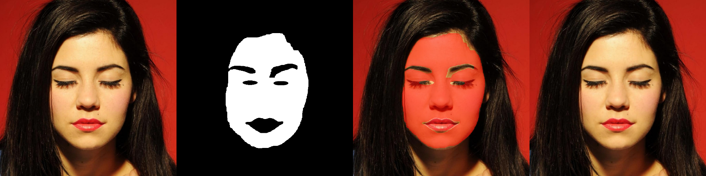
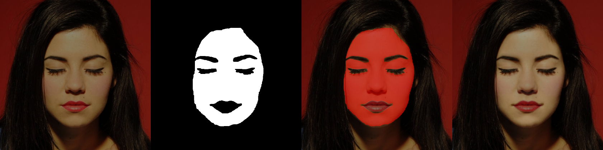
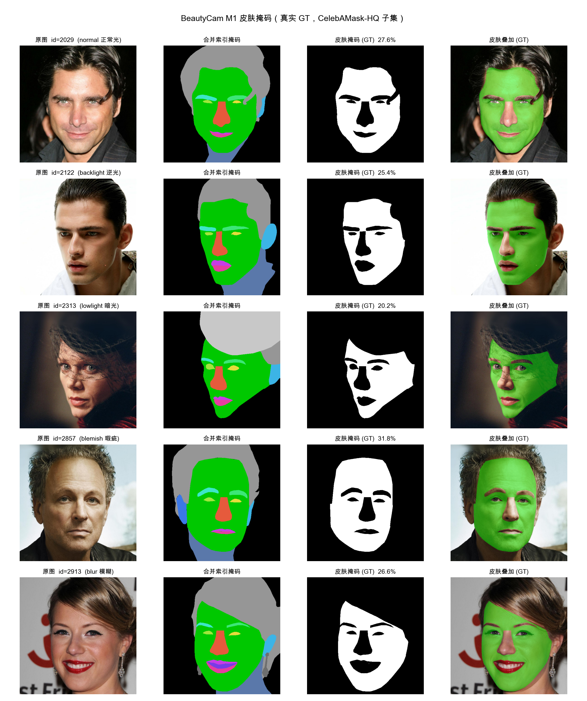

《数字图像处理》课程设计知识点解答
本页围绕 BeautyCam 人脸美颜相机 这一课程设计载体，系统讲解其中涉及的《数字图像处理》核心知识原理。每个知识点均给出数学公式、逐变量解释与式子的物理意义，并配效果对照。页面聚焦原理本身，不涉及工程实现细节。
课程设计作业说明
- 课程名称
- 《数字图像处理》（本科课程设计 / 大作业）
- 作业题目
- 人脸美颜相机 —— 肤色保护与细节增强
- 实现语言
- Python 3.10 / 3.12
- 技术路线
- 全程传统图像处理方法，不训练深度学习模型
- 涉及知识点
- 色彩空间、直方图增强、伽马校正、双边滤波、阈值分割、图割、形态学、掩膜融合、仿射变换、频域滤波、白平衡、维纳复原、图像质量评价
- 提交信息
- 课程名称、姓名、学号、提交日期见 README 占位符处填写
1. 数字图像基础与色彩空间
概念定义
数字图像是对连续场景进行空间采样与幅度量化后得到的二维矩阵。灰度图像每个像素用一个亮度值表示，彩色图像则用多个通道描述。为了把「亮度」与「颜色」分开处理，常把 RGB 转换到 YCrCb / YUV 家族：其中 $Y$ 表示亮度，$\mathrm{Cr}$、$\mathrm{Cb}$ 表示色度。此外，HSV 用色调、饱和度、明度描述颜色，CIE Lab 则是接近人眼感知的均匀色空间。
数学公式与变量解释
$$Y = 0.299\,R + 0.587\,G + 0.114\,B$$
$$\mathrm{Cr} = 0.500\,R - 0.419\,G - 0.081\,B + 128,\qquad \mathrm{Cb} = -0.169\,R - 0.331\,G + 0.500\,B + 128$$
| 符号 | 含义 |
|---|---|
| $R,\,G,\,B$ | 红、绿、蓝三通道的像素值，8 位图像中取 $0\sim255$ |
| $Y$ | 亮度（luma），表示人眼感知的明暗程度 |
| $\mathrm{Cr},\,\mathrm{Cb}$ | 红色度与蓝色度，描述颜色偏离灰色的程度；$+128$ 是为避免负数而引入的零偏置 |
| $0.299,\,0.587,\,0.114$ | 亮度权重系数，来自 ITU-R BT.601 标准 |
效果说明
亮度与色度分离后，处理可以被限制在皮肤区域内进行，从而避免「提亮皮肤时顺便改变肤色」。下面的四联图依次展示原图、皮肤区域、蒙版预览与最终输出，可以看到处理严格作用于人脸皮肤区域。

2. 图像增强：直方图均衡化与伽马校正
概念定义
直方图描述图像中各灰度级出现的频率。直方图均衡化通过累积分布函数把灰度重新映射，使动态范围展开、对比度提高；CLAHE（限制对比度自适应直方图均衡）把图像分块后分别均衡，并限制每个直方图的高度，避免局部噪声被过度放大。伽马校正是一种幂次灰度变换，通过改变曲线的凹凸来控制整体明暗。
数学公式与变量解释
直方图均衡化的灰度映射（离散形式）：
$$s_k = (L-1)\sum_{j=0}^{k} p_r(r_j),\qquad p_r(r_j)=\frac{n_j}{MN}$$
| 符号 | 含义 |
|---|---|
| $r_j$ | 输入图像第 $j$ 级灰度（$j=0,\dots,L-1$） |
| $s_k$ | 映射后的输出灰度 |
| $p_r(r_j)$ | 第 $j$ 级灰度出现的概率，$n_j$ 为该级像素数，$MN$ 为图像总像素数 |
| $L$ | 灰度级数，8 位图像为 256 |
伽马校正与自适应目标亮度：
$$Y_{\text{out}} = 255\left(\frac{Y_{\text{in}}}{255}\right)^{\gamma},\qquad \gamma = \min\!\left(1,\; \frac{\ln(Y_t/255)}{\ln(\bar Y/255)}\right)$$
$$Y_t = \min\!\left(\bar Y + g\,(Y_{\text{target}}-\bar Y),\;\bar Y\cdot g_{\max}\right)$$
| 符号 | 含义 |
|---|---|
| $Y_{\text{in}},\,Y_{\text{out}}$ | 变换前后的像素亮度（$0\sim255$） |
| $\gamma$ | 伽马指数；$\gamma<1$ 使曲线上凸、图像变亮，$\gamma=1$ 为恒等变换 |
| $\bar Y$ | 当前皮肤区域的平均亮度 |
| $Y_{\text{target}},\,Y_t$ | 期望达到的目标亮度与实际采用的目标亮度 |
| $g,\,g_{\max}$ | 向目标靠拢的比例，以及允许的最大亮度放大倍率（限幅） |

3. 图像滤波与去噪
概念定义
滤波是在像素邻域内按一定权重重新估计中心像素值。均值与高斯滤波按位置加权，能平滑噪声但会模糊边缘；中值滤波取邻域中值，对椒盐噪声鲁棒；双边滤波在位置权重之外再引入颜色相似度权重，因此可以「平滑平坦区域、保留颜色突变边缘」，这正是磨皮时保护五官的关键。
数学公式与变量解释
$$I_{\text{out}}(p)=\frac{\sum_{q} w(p,q)\,I(q)}{\sum_{q} w(p,q)}$$
$$w(p,q)=\exp\!\left(-\frac{\lVert p-q\rVert^2}{2\sigma_s^2}\right)\cdot\exp\!\left(-\frac{\lVert I(p)-I(q)\rVert^2}{2\sigma_c^2}\right)$$
| 符号 | 含义 |
|---|---|
| $p,\,q$ | 中心像素与其邻域像素的位置坐标 |
| $I(\cdot)$ | 像素的亮度或颜色值 |
| $w(p,q)$ | 邻域像素对中心像素的贡献权重 |
| $\sigma_s$ | 空间域标准差，控制「多远算近邻」 |
| $\sigma_c$ | 颜色域标准差，控制「多像算同类颜色」 |
中值滤波与 Otsu 自动阈值：
$$y(p)=\underset{q\in \mathcal N(p)}{\operatorname{median}}\; I(q)$$
$$\sigma_B^2(t)=\omega_0\,\omega_1\,(\mu_0-\mu_1)^2,\qquad t^{*}=\arg\max_{t}\,\sigma_B^2(t)$$
| 符号 | 含义 |
|---|---|
| $\mathcal N(p)$ | 以 $p$ 为中心的邻域窗口 |
| $t,\,t^{*}$ | 分割阈值，以及使类间方差最大的最优阈值 |
| $\omega_0,\omega_1$ | 被阈值分开的暗、亮两类像素所占比例 |
| $\mu_0,\mu_1$ | 暗、亮两类的平均灰度 |
| $\sigma_B^2$ | 类间方差，衡量两类分离程度 |
实测的皮肤局部方差下降率约为 26%（落在 20%–40% 的合理区间），五官边缘保护指数约为 0.999，说明平滑作用于皮肤而五官梯度几乎未变。
4. 图像分割与人脸区域
概念定义
肤色检测本质上是像素级的二分类问题。常用做法是：先用颜色阈值得到肤色候选，再用图割（Graph Cut / GrabCut）在人脸框内把前景（皮肤）与背景分开，最后用形态学运算和小区域过滤清理结果。人脸与眼睛的检测框提供了「哪里是脸」的先验，从而排除眉毛、眼睛、嘴唇等不应被误当作皮肤的区域。
数学公式与变量解释
肤色颜色阈值（只约束色度，不限制亮度）：
$$133 \le \mathrm{Cr} \le 173,\qquad 77 \le \mathrm{Cb} \le 127$$
图割的能量最小化（GrabCut 采用高斯混合模型描述颜色分布）：
$$E = \sum_{i} D_i \;+\; \lambda \sum_{(i,j)\in \mathcal{C}} \left| \ln p_i - \ln p_j \right|$$
| 符号 | 含义 |
|---|---|
| $D_i$ | 数据项：像素 $i$ 属于前景/背景的代价，由颜色模型（GMM）给出 |
| $\lambda$ | 平滑项系数，权衡「颜色证据」与「邻域一致性」 |
| $\mathcal{C}$ | 相邻像素对的集合 |
| $p_i,\,p_j$ | 相邻像素的颜色模型概率 |
形态学开、闭运算（$A$ 为二值图，$B$ 为结构元素）：
$$A\circ B = (A\ominus B)\oplus B,\qquad A\bull B = (A\oplus B)\ominus B$$
实测固定样本上，分割的交并比约为 0.753、召回率约为 0.904，说明大部分真实皮肤区域都被正确检出。

回到顶部 ↑上半部分讲解色彩空间、图像增强、滤波去噪与图像分割；下半部分继续讲解掩膜融合、几何自适应、锐化与频域增强、色彩调整、图像复原与质量评价。
5. 图像融合与掩膜
概念定义
直接使用二值掩码替换像素会在边界产生明显接缝。实际处理中通常引入 Alpha 混合：用连续变化的权重在「处理后图像」与「原图」之间插值，使边界平滑过渡，这一过程称为羽化。权重可由像素到区域边界的距离决定。
数学公式与变量解释
$$I_{\text{out}}(p) = \alpha(p)\,I_{\text{cand}}(p) + \bigl[1-\alpha(p)\bigr]\,I_{\text{orig}}(p)$$
$$D(p)=\min_{b\in \partial M}\lVert p-b\rVert,\qquad \alpha(p)=\operatorname{clip}\!\left(\frac{D(p)}{r},0,1\right),\qquad \alpha_s=\alpha^2(3-2\alpha)$$
| 符号 | 含义 |
|---|---|
| $I_{\text{cand}},\,I_{\text{orig}},\,I_{\text{out}}$ | 处理后的候选图像、原始图像与混合输出 |
| $\alpha(p)$ | 像素 $p$ 处采用处理结果的权重，取值 $0\sim1$ |
| $D(p)$ | 像素到区域边界 $\partial M$ 的最短距离（距离变换） |
| $r$ | 羽化半径，决定过渡带宽度 |
| $\alpha_s$ | 经 smoothstep 函数平滑后的权重 |
效果上，由于处理权重随距离平滑衰减，人脸边缘与头发、背景交界处不会出现生硬的色块或亮斑，图 2 中蒙版区域与输出的对应关系直观体现了这一点。
6. 几何变换与区域自适应
概念定义
仿射变换是最常见的几何变换，包含缩放、旋转、平移和剪切，其特点是保持直线与平行关系。区域自适应则把归一化的模板坐标映射到实际检测到的人脸框，使处理区域能随人脸的位置和大小自动调整，而不是固定在图像某一处。
数学公式与变量解释
$$\begin{bmatrix}x'\\ y'\\ 1\end{bmatrix} = \begin{bmatrix}a & b & t_x\\ c & d & t_y\\ 0 & 0 & 1\end{bmatrix}\begin{bmatrix}x\\ y\\ 1\end{bmatrix}$$
| 符号 | 含义 |
|---|---|
| $(x,y),\,(x',y')$ | 变换前后的像素坐标 |
| $a,b,c,d$ | 线性部分，控制缩放、旋转与剪切 |
| $t_x,\,t_y$ | 水平与垂直方向的平移量 |
区域自适应的坐标映射：
$$x = x_0 + u\,w,\qquad y = y_0 + v\,h,\qquad u,v\in[0,1]$$
效果上，这种自适应使分割与保护区域能贴合不同姿态、不同大小的人脸（见图 3），避免固定模板裁切偏位人像。
7. 图像锐化与频域增强
概念定义
USM（非锐化掩膜）是经典的锐化方法：先从原图减去模糊版本得到「细节残差」，再按一定强度加回原图。从频率域看，图像可分解为代表整体明暗的低频与代表细节边缘的高频；通过调整两者比例，就能在磨皮之后回注细节，避免皮肤显得塑料感。
数学公式与变量解释
$$I_{\text{sharp}} = I + k\,(I - I_{\text{blur}})$$
$$H(f_x,f_y)=\exp\!\left[-2\pi^2\sigma^2(f_x^2+f_y^2)\right],\qquad \text{low}=\mathcal{F}^{-1}\{\mathcal{F}(Y)\cdot H\},\qquad \text{high}=Y-\text{low}$$
$$Y_{\text{out}} = g_l\cdot \text{low} + g_h\cdot \text{high}$$
| 符号 | 含义 |
|---|---|
| $I,\,I_{\text{blur}},\,I_{\text{sharp}}$ | 原图、模糊图与锐化结果 |
| $k$ | 锐化强度，控制加回多少细节 |
| $f_x,\,f_y$ | 水平与垂直方向的频率（周期/像素） |
| $\sigma$ | 高斯低通的空间尺度（像素），越大截止频率越低 |
| $H(f_x,f_y)$ | 低通传递函数；$H(0,0)=1$ 保证直流（平均亮度）不变 |
| $\mathcal{F},\,\mathcal{F}^{-1}$ | 傅里叶变换及其逆变换 |
| $g_l,\,g_h$ | 低频与高频的增益，决定保留多少基础明暗与细节 |
| $\text{low},\,\text{high}$ | 低频分量与高频分量，两者相加恰好重构原亮度 $Y$ |
最终输出（见图 1、图 2）即为平滑与高频回注叠加的结果，既平滑了皮肤又保留了必要的纹理与五官轮廓。
8. 色彩与美白调整
概念定义
白平衡的目的是校正光源色偏，使白色物体在成像后仍接近白色。灰度世界法假设场景平均颜色为灰色；Shades of Gray 方法进一步假设各通道的 $p$ 次幂均值相等，对复杂光照更稳健。饱和度描述颜色的鲜艳程度，可在 HSV 空间中单独调整；色温参数则用于微调画面的冷暖倾向。
数学公式与变量解释
$$S_c=\left(\frac{1}{N}\sum_{i=1}^{N} I_{c,i}^{\,p}\right)^{1/p},\qquad g_c=\frac{t}{S_c},\qquad t=\sqrt[3]{S_R\,S_G\,S_B}$$
$$g'_c = 1 + s\,(g_c-1),\qquad g_R\leftarrow g_R(1-0.15\,T),\quad g_B\leftarrow g_B(1+0.15\,T),\qquad S_{\text{out}}=\operatorname{clip}(S\cdot k_s,0,255)$$
| 符号 | 含义 |
|---|---|
| $c\in\{R,G,B\}$ | 颜色通道索引 |
| $I_{c,i}$ | 第 $i$ 个像素在通道 $c$ 的归一化亮度 |
| $p$ | 幂指数，控制统计量对高亮像素的敏感程度 |
| $S_c$ | 通道 $c$ 的颜色统计量 |
| $g_c,\,t$ | 通道增益与目标灰色值（三通道统计量的几何平均） |
| $s$ | 白平衡强度，$s=1$ 为完全校正，$s=0$ 为不校正 |
| $T$ | 色温，正值偏暖、负值偏冷，取值 $-1\sim1$ |
| $S,\,k_s,\,S_{\text{out}}$ | 原饱和度、饱和度增益与调整后饱和度 |
效果上，亮度、曝光与白平衡分别作用于不同环节，但都围绕「让肤色自然、背景不失真」的目标；偏色校正的效果可用感知色差指标 $\Delta E_{2000}$ 衡量。
9. 图像复原：维纳反卷积
概念定义
图像复原是图像退化的逆过程。运动模糊可用点扩散函数（PSF）建模：清晰图像与 PSF 卷积，再叠加噪声，得到模糊图像。维纳滤波在频域进行反卷积，并引入正则项抑制直接逆滤波在弱频率处对噪声的剧烈放大，是图像复原的经典方法。
数学公式与变量解释
$$g = h * f + n \quad\Longrightarrow\quad G(u,v)=H(u,v)\,F(u,v)+N(u,v)$$
$$\hat F(u,v) = \frac{H^{*}(u,v)}{\left|H(u,v)\right|^2 + K}\,G(u,v)$$
| 符号 | 含义 |
|---|---|
| $f,\,g$ | 清晰图像与观测到的退化（模糊）图像 |
| $h$ | 点扩散函数（PSF），描述运动模糊的核；$*$ 表示卷积 |
| $n$ | 加性噪声 |
| $F,\,G,\,H,\,N$ | 上述各量在频域的表示，$H$ 又称光传递函数（OTF） |
| $H^{*}$ | $H$ 的复共轭 |
| $K$ | 维纳正则项，与噪声水平相关 |
| $\hat F$ | 对清晰图像频谱的估计 |
复原效果通常用峰值信噪比与结构相似度的提升量来衡量；本知识点作为课程「图像复原」章节的完整示例列出。
10. 图像质量评价
概念定义
图像质量评价分为客观指标与主观评价。客观指标用数学公式衡量分割精度、平滑程度、细节保留与保真度；主观评价则由观察者对自然度、细节、肤色等打分。二者结合才能较全面地判断处理效果。
数学公式与变量解释
$$\mathrm{IoU}=\frac{|A\cap B|}{|A\cup B|},\qquad \mathrm{Recall}=\frac{|A\cap B|}{|GT|}$$
$$\mathrm{MSE}=\frac{1}{N}\sum_{i}\bigl(I_i-\hat I_i\bigr)^2,\qquad \mathrm{PSNR}=10\log_{10}\!\left(\frac{255^2}{\mathrm{MSE}}\right)$$
$$\mathrm{var\_drop}=\frac{\sigma^2_{\text{before}}-\sigma^2_{\text{after}}}{\sigma^2_{\text{before}}},\qquad \mathrm{epi}=\frac{\sum \min(g_{\text{before}},g_{\text{after}})}{\sum \max(g_{\text{before}},g_{\text{after}})}$$
| 符号 | 含义 |
|---|---|
| $A,\,B$ | 预测区域与真实标注区域；$GT$ 为真实标注 |
| $I_i,\,\hat I_i$ | 原图与参考图的第 $i$ 个像素；$N$ 为像素总数 |
| $\mathrm{MSE}$ | 均方误差，衡量两图像素差异 |
| $\sigma^2_{\text{before}},\,\sigma^2_{\text{after}}$ | 处理前后皮肤区域的局部亮度方差 |
| $g_{\text{before}},\,g_{\text{after}}$ | 处理前后五官区域的梯度幅值（如 Sobel 梯度） |
实测的分割 IoU 约 0.753、Recall 约 0.904，平滑的方差下降率约 26% 且五官保护指数约 0.999，高频保留率约 1.07，各项指标均在合理区间内。
11. 参考资料
- Rafael C. Gonzalez, Richard E. Woods. Digital Image Processing, 4th ed. Pearson, 2018. ISBN 978-0133356724.（色彩空间、直方图处理、空间/频率域滤波、图像复原的经典教材）
- Rafael C. Gonzalez, Richard E. Woods, Steven L. Eddins. Digital Image Processing Using MATLAB, 3rd ed. Gatesmark Publishing, 2020. ISBN 978-0982082040.
- Karel Zuiderveld. "Contrast Limited Adaptive Histogram Equalization." In: Graphics Gems IV, Academic Press, 1994, pp. 474–485.（CLAHE 原始文献）
- G. Sharma, W. Wu, E. N. Dalal. "The CIEDE2000 Color-Difference Formula: Implementation Notes, Supplementary Test Data, and Mathematical Observations." Color Research & Application, 30(1):21–30, 2005. DOI: 10.1002/col.20070.（色差指标 $\Delta E_{2000}$ 的来源）
- W. K. Pratt. Digital Image Processing, 4th ed. Wiley, 2007. ISBN 978-0471750991.（维纳滤波与图像复原）
- OpenCV 官方文档 — OpenCV 4.10.0 Modules（色彩空间转换、CLAHE、双边滤波、图割等算法的 API 说明）。